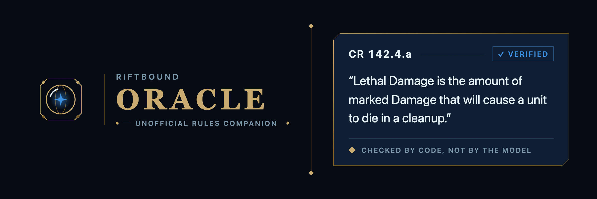
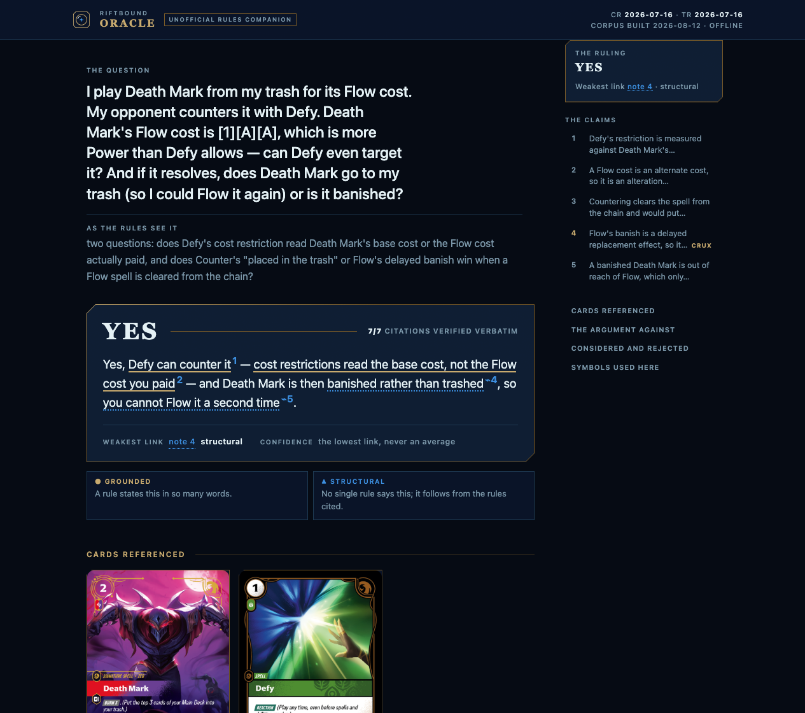
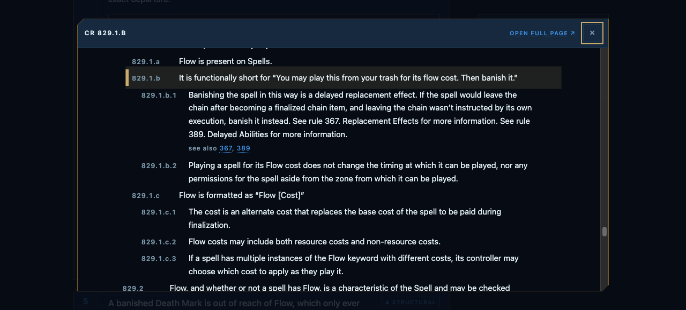
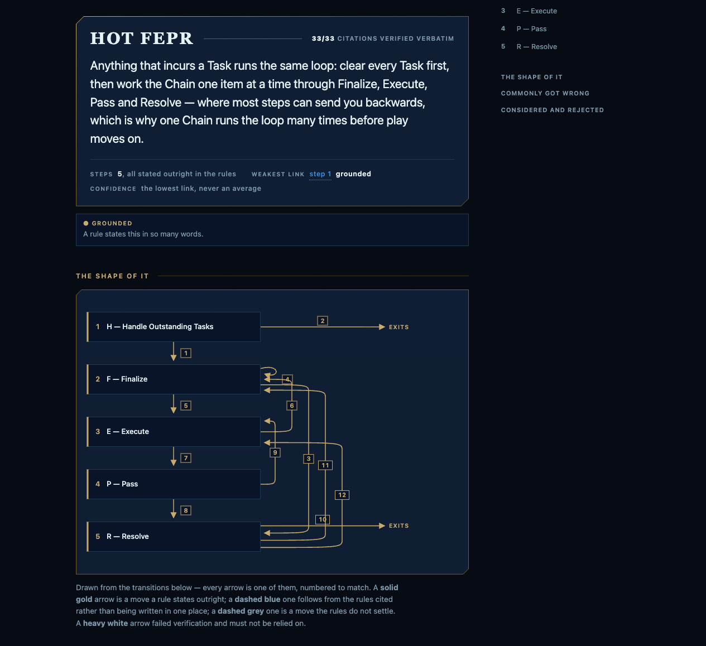

Riftbound TCG · verified citations
Riftbound rules answers you can actually check.
Ask your AI agent a rules question. Get back a verdict, the reasoning split into individually-graded claims, and every citation one click away from the rule it rests on.
Two Claude Code skills over Riot's own documents: rules-report, which answers and then proves what it cited, and deck-lab, which builds decks and tests them against real tournament lists.
Install
$ npx skills add gear-null/riftbound-oracleClaude Code, Cursor, Codex, Gemini CLI, GitHub Copilot and a dozen more. Python 3.9+ is the only requirement — the one macOS already ships. No build, no API key, no account.

Why this exists
29%
of cited rule IDs
don't exist
Ask a chatbot a Riftbound question and it will cite 471.1.b.1 with total
confidence whether or not that rule exists. We measured that rather than assuming it: a
7,774-answer community corpus (RiftJudge) was crawled, stamped per-entry as unofficial,
and counted.
Of the 831 answers that cite a rule ID at all — 1,239 citations between them — 29% of the citations point at a rule ID that does not exist, and 33% of those answers contain at least one such ID.
Measured in ADR 0003, which is also why community Q&A is not a citable source here.
RiftJudge corpus · 7,774 answers
| Mention Riot | 5 · 0.06% |
| Cite a dev or designer | 5 · 0.06% |
| Flag a coming rules change | 13 · 0.2% |
| Admit the rules don't settle it | 4 · 0.05% |
| Cite a rule ID at all | 831 · 10.7% |
| …of those citations, broken | 29% |
The promise
A citation that fails is not softened
Before a report is rendered, a verifier proves every cited rule exists and
every quote appears verbatim in it. A failure doesn't get hedged into "roughly" — it forces
the whole answer to UNSETTLED, and the renderer then refuses to write the file
at all.
- The rule must exist
- Every ID is resolved against the parsed corpus — the same 3,316 rules the rulebook on this site is generated from. An invented ID has nowhere to resolve to.
- The quote must be verbatim
- The quoted span is matched inside the rule's own text. Paraphrase fails exactly as hard as fabrication does.
- Confidence is the floor
- Never an average. Nine grounded claims plus one inference make an inferred answer, and the report names which claim is the soft one.
- Refusal is an answer
- When the rules genuinely don't settle something you get
UNSETTLEDand a list of what was searched — not a confident guess. - Errata applied
- Card text carries Riot's published errata. The card database the rest of the ecosystem reads is months behind; 63 cards here say what Riot actually ruled.
- It works on a plane
- Rules, cards and rulebook all ship with the skill, so answering needs no network at all. Only card artwork loads remotely, when you open a report.
What you actually get

One HTML file,
argued in the open
A hard ruling runs long, so it is indexed beside itself — the verdict, the weakest link, and every claim in order with the load-bearing one marked. It tracks which claim you are reading.
Each claim carries its basis as a chip: ● grounded when a rule states it in so many words, ▲ structural when it follows from the rules cited, and ○ gap when the rules don't address it. Exactly one claim is marked CRUX, and it must say what happens if it is wrong.
Print it and the index drops away, every citation opens, and the whole thing inverts to a clean sheet — because judges print these.
Every citation
is followable
Click a rule and the full rulebook opens over the report, scrolled to the exact clause with its cross-references live — without losing your place in the argument. A rule is meaningless without the clause it sits under, so the citation shows its ancestor spine too.
The same anchored rulebook is on this site, so a citation anywhere can deep-link straight at a rule: CR 334, CR 465.2.c.1.

Two kinds of document
It explains things,
not only rules on them
Ask how something works rather than what happens in one situation and you get a primer instead of a ruling: the procedure as numbered steps, every move between them cited, and a diagram of the whole loop.
The diagram is derived from those cited transitions — there is no field an author can draw an arrow in — so the picture can never say something the document didn't declare. A transition with no citation fails verification outright, which makes a primer stricter than a ruling in the one place a reader acts on.

Diagram explainers
Three procedures, drawn from their own citations
Each of these is a rendered primer: the steps, the conditions that move you between them, and the rule that says so. The map beside the prose is computed from exactly those transitions and from nothing else.
5 steps · 12 transitions
HOT FEPR
Clear every Task first, then work the Chain one item at a time through Finalize, Execute, Pass and Resolve — where most steps can send you backwards.
4 steps · 7 transitions
Combat
Three steps at one Battlefield — a Showdown, then damage, then resolution — and the third step can stage the whole thing again rather than ending it.
4 steps · 8 transitions
Showdowns
An alternating window at a contested Battlefield: the contester acts first, Focus moves each time a Chain closes, and passing once is not enough to close it.
Also included
A deck lab — a table,
not a player
The second skill builds decks and tests them against real tournament lists. Code owns everything that must not be imagined — the shuffle, what you drew, whose turn it is, what a rune pool holds, how much damage a combat assigns, and whether the deck is legal under rule 103. Your agent owns every decision and every word of card text.
So the report keeps its two halves apart and says which is which: shuffle math at 50,000 hands, which involves no decisions and so is exact and cheap; and played games at the sample size games are actually played at, with n and a Wilson interval beside every rate. At four games that interval runs 30–95%, and the report prints it rather than quietly rounding a 3–1 into "75%".
24 tournament decklists ship with it.
Ask it anything like
Build me an aggressive Irelia list and see how it holds up against the Master Yi decks
Is 12 Power the right count if I'm already running four channels?
Play out game one of Annie versus Kai'Sa and stop at the first Showdown
Install
One command,
both skills
$ npx skills add gear-null/riftbound-oracleThen just ask. Your agent looks up the cards, walks the rulebook, writes the answer, verifies it, and opens the report. You never run a command.
No Node? The published release installs the same folder, verified against its checksum:
$ curl -fsSL https://raw.githubusercontent.com/gear-null/riftbound-oracle/main/install.sh | shDesktop and mobile apps take a file instead —
download the .zip from
Releases and
upload it as a skill. Those apps block remote images, so set
RIFTBOUND_EMBED_ART=1 to inline the card artwork.
Ask it anything like
Does a countered Flow spell still get banished?
Unchecked Power deals 12 damage to all units at battlefields. Player 2 has Viktor, Leader and two Vanguard Sergeants. How many Recruits do they play?
Explain the HOT FEPR loop as best you can
Text-only skill surfaces can't run it. The answers come from executing a verifier against a corpus, not from prose an agent reads.